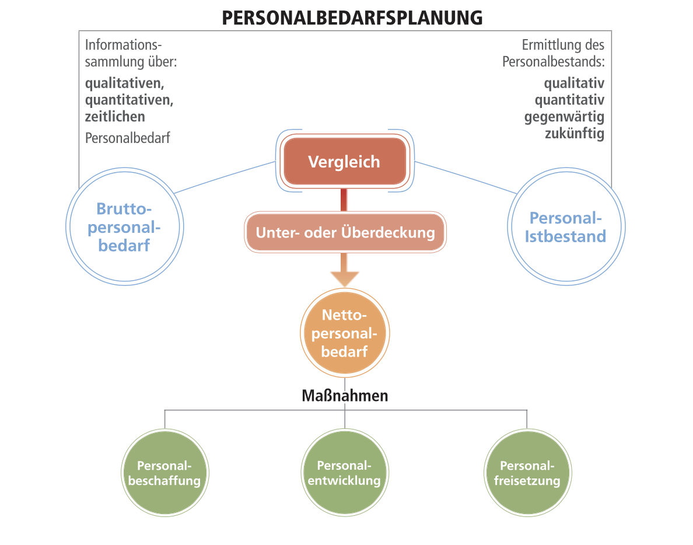
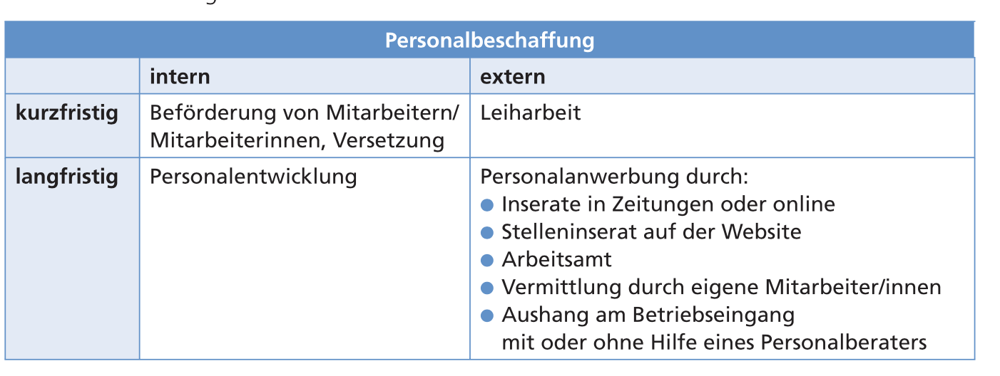
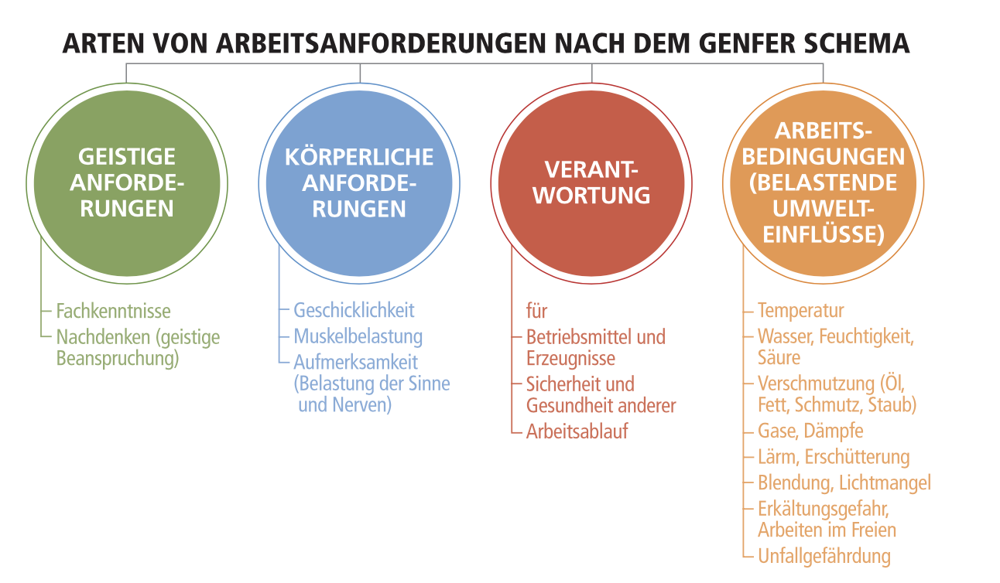
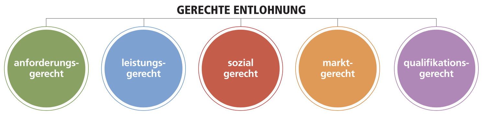
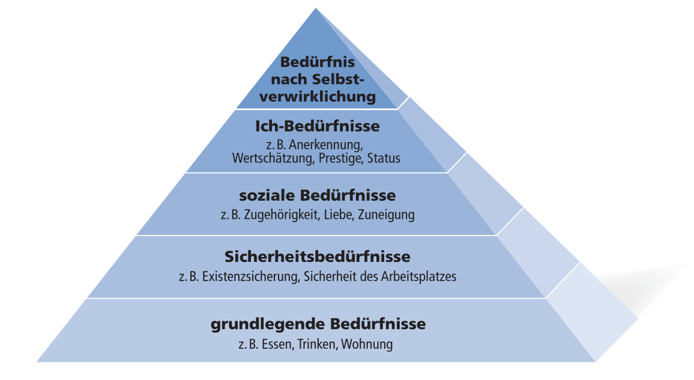
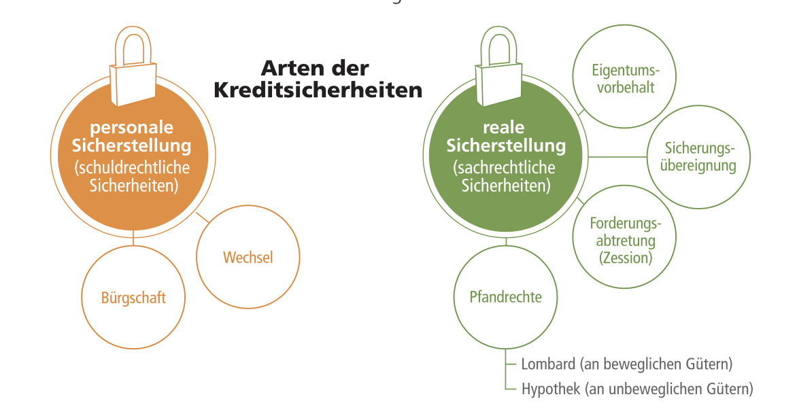

Wie funktioniert ein Mehrliniensystem und für was kann es am Besten verwendet werden? (Seite 71/72)
Jede Stelle ist mehreren Instanzen unterstellt → flexibler, für Bereiche die sich schnell ändern
Produkt A kann von allen Abteilungen Weisungen erhalten
Formale und informale Organisation
Was bedeutet „formal”?
Formal bedeutet „auf dem Papier”.
Was ist eine Informale Organisation und welche Elemente gibt es? (Seite 77)
Informaler Führer: Führer, dessen Meinung von den Mitarbeitern anerkannt wird.
Informale Normen: Regeln, die nicht auf dem Papier existieren z.B.: Schäden werden selbst behoben
Informale Kommunikationsstrukturen: z.B.: Mitarbeiter kennen sich privat und reden miteinander, treffen sich im Buffet oder machen gemeinsam Sport. Vorteil: schnellere Kommunikation
Informale Gruppen: persönliche Zusammenschüsse (z.B.: durch gemeinsamen Sport, …)
Ablauforganisation
Wie wird die Ablaufplanung durchgeführt? (Seite 83)
Nur wissen, dass der Ablauf mit einem Balkendiagramm geplant wird.
Führung
Führungsstile
Welche Führungsstile gibt es? (Seite 95)
Extrempunkte (Delegativ, Autoritär) wichtig!
Führungskonzepte
Was wird mithilfe eines Verhaltensgitter ermittelt? (Seite 100)
Ist einem Unternehmer die Leistung oder das Wohl des Mitarbeiters wichtig.
9.9: am Besten, 1.1: am Schlechtesten
Wie sieht ein Reifegradansatz aus und was bedeutet Reife? (Seite 101)
Reife: Kenntnisse (schon lange oder erst kurz im Unternehmen)
Was sagt der PDCA-Zyklus aus und welche Elemente hat er? (Seite 114)
Was muss ich machen um Ziele zu erreichen?
PDCA-Zyklus
Personalmanagement
Personalbedarfsplanung (Seite 125)
Was muss passieren, wenn 1. zu viel bzw. zu wenig Personal vorhanden ist? 2. das Personal zu schlechte Qualifikationen hat?
Zu viel Personal: Teilzeitarbeit, entlassen schwierig, weniger Arbeiten
Zu wenig Personal: Neue Mitarbeiter
Personal hat nicht die passende Qualitfikation: Weiterbilden
Was passiert bei der Personalbedarfsplanung (Grafik)?
Was sind Schwankungen und welche Arten gibt es (Personal)?
Schwankungen (kurz-, mittel und langfristig): wegen Haupt-/Nebensaison, Mitarbeiten gehen in Pension (langfristig), Krankheiten (kurzfristig), Urlaub (kurzfristig)
Was sind Maßnahmen zur Deckung des Personalbedarfs (Seite 128)?
Personalbeschaffung (extern: jemanden von außen besorgen)
Weitere Maßnahmen:Seite 129
Personalentlohnung
Welche Arten der Arbeitsanforderungen gibt es – Genfer Schema (Seite 150)?
Was sind die Faktoren für gerechte Entlohnung (Seite 150)?
Welche anderen Entgeldformen gibt es (Seite 153 + 154)?
Provisionen: Prozentuell an einem Geschäft beteiligt
Tantiemen: Prozentuell am Gewinn beteiligt
Grafikationen: Sondervergütungen z.B.: Bilanzgeld
Zulagen: zum Ausgleich von Nachteilen (Kinder)
Personalbeurteilung
Was ist ein Beurteilungsgespräch (Seite 161)?
Gespräch zwischen Mitarbeiter und Führungskraft → über Leistung oder Entwicklungsmöglichkeiten diskutieren
Was sind die Ziele eines Beurteilungsgespräch (Seite 161)?
Verbesserung von schlechten Leistungen
Erhaltung eines hohen Leistungsniveaus
Welche Regeln gelten für das Beurteilungsgespräch (Seite 162)?
Merkmale der Leistung und nicht der Person besprechen
Stellungnahme erfragen
Verbesserungsvorschläge für die Fehler geben
Fehler bei der Personalbeurteilung
Was sind die grundlegenden Fehler bei der Personalbeurteilung (Seite 162)?
Wahrnehmungsverzerrungen bzw. „Halo-Effekt”
Maßstabsanwendung
bewusste Verfälschungen
andere Verzerrungsfaktoren: Alter bzw. Geschlecht des Beurteilten
Welche Wahrnehmungsverzerrungen gibt es (Seite 162)?
Nikolaus-Effekt (Recency-Effekt): Beziehung auf Fehler, die erst vor kurzem passiert sind.
Hierarchie-Effekt: Je höher in der Hierachie, desto besser bewertet.
Kleber-Effekt: Unterschätzung von Mitarbeitern, die schon lange Zeit nicht mehr befördert wurden.
Welche Fehler der Maßstabsanwendung gibt es (Seite 163)?
Maßstabs-Effekt: Beurteilender verwendet sich selbst als Maßstab
Tendenz zur Mitte: Durchschnittswerte werden bevorzugt
Häufungseffekt (Tendenz zur Strenge/Milde): Gesamtbild der Mitarbeiter beeinflusst
Sympathie/Antipathie
Wofür werden bewusste Verfälschungen verwendet (Seite 163)?
Beurteilung als Mittel zum Zweck: für Leistungszulagen, …
Personalweiterbildung
Was sind Teilbereiche der Personalentwicklung (Seite 168)?
Arbeitsgestaltung
Welche Punkte muss ein humanisierter Arbeitsplatz berücksichtigen (Seite 172)?
Probleme bei betrieblichen Sozialleistungen: Sozialleistungen aus guten Wirtschaftsjahren können schwer abgebaut werden; keinen Lohnvergleich zwischen verschiedenen Betrieben
Welche Punkte beinhaltet eine bessere Arbeitsorganisation (Seite 174)?
Job-Enlargement: Erweiterung des Arbeitsbereichs
Job-Enrichment: Erweiterung des Verantwortungsbereiches
Job-Rotation: systematisches Wechseln des Arbeitsplatzes
teilautonome Arbeitsgruppen → Kombination aus Job-Enrichment und Job-Rotation
Motivation
Welche Arten der Motivation gibt es (Seite 177)?
Was sind die 5 Kategorien der Bedürfnishierarchie (Seite 178)?
Welche Motivationstheorien gibt es (Seite 179)?
Herzbergs Zwei-Faktoren-Theorie
Arbeitnehmer wurden nach Faktoren gefragt, die zur Zufrieden- oder Unzufriedenheit führen.
Motivatoren (direkter Zus. mit der Tätigkeit): Anerkennung, Aufstieg, Verantwortung
Hygienefaktoren (indirekter Zus. mit der Tätigkeit): Bezahlung, Arbeitsbedingungen, Arbeitssicherheit, Unternehmenspolitik
McGregors Theorien X und Y
Theorie X: pessimistisches Menschenbild
Theorie Y: optimistisches Menschenbild
Personal und Recht
Was ist ein Kollektivvertrag (Seite 189)?
Vertrag zwischen den Gewerkschaften Vertretung von Arbeitnehmer und Wirtschaftskammer
Welche Pflichten hat ein Arbeitnehmer und Arbeitgeber (Seite 190)?
Arbeitnehmer: persönliche Arbeitsleistung, Treuepflicht (Verschwiegenheit, Konkurrenzverbot → keine Nebenbeschäftigungen, keine Geschenkannahme)
Arbeitgeber: Zahlung des Entgeld, Gleichbehandlung, Arbeitnehmerschutz (Gefahrenschutz, Arbeitszeitschutz und Verwendungsschutz (z.B.: bei Kindern))
Wie viel Urlaub steht einem Arbeitnehmer zu (Seite 191)?
30 Werktage (nach 6 Monaten in voller Höhe)
Unterschied zwischen Mutterschutz und Karenzurlaub (Seite 192)?
Mutterschutz: 8 Wochen vor, bis 8 Wochen nach dem Geburtstemin → Gehalt in voller Höhe
Karenzurlaub: bis zum 2. Geburtstag des Kindes → ohne Entgeld
Entlassung, Kündigung
Wie kann ein Arbeitsverhältnis enden (Seite 192)?
einvernehmlich
Kündigung durch den Dienstgeber → kein Grund erforderlich (immer zum Quartalsende)
Kündigung durch den Dienstnehmer → Einhaltung der einmontaigen Kündigungsfrist notwendig
Vorzeitige (fristlose) Entlassung → Grund notwendig (z.B.: Dienstunfähig wegen Alkohol, Beschimpfungen von Führungskräften, Verrat von Betriebsgeheimnissen oder unbefugtes Verlassen der Arbeit)
Fristloser Austritt des Arbeitnehmers → Grund notwendig (z.b.: sexuelle Belästigung, Gesundheitsgefährdung, …)
Finanzierung des Unternehmens
Was sind die Finanzierungsquellen und welche Merkmale gibt es eines Unternehmers (Seite 219)?
Innenfinanzierung
Welche Arten der Innenfinanzierung gibt es (Seite 219)?
Außenfinanzierung
Welche Arten der Außenfinanzierung gibt es (Seite 228)?
Welche Arten von Kreditsicherheiten gibt es (Seite 229)?
Bürgschaft: Ausfallsbürgschaft (Teilhaftung), einfache/subsidäre Bürgschaft (Gläubiger muss erst mahnen), solidarische Bürgschaft (Gläubiger kann wählen von wem er die Schuld einfordert)
Wechsel: Wertpapiere → bestimmter Betrag wird zu einem bestimmten Zeitpunkt bezahlt (diskontiert → es wird vor der Fälligkeit an eine Bank verkauft)
Lombard: Wertpapierlombard, Edelmetalllombard und Warenlombard
Hyptothek sind im Lastenblatt des Grundbuches eingetragen.
Forderungsabtretung: Lieferung auf Ziel
Sicherheitsübereignung: Besitzer kann die Sachen weiterhin benutzen
Eigentumsvorbehalt: Sache, bleibt für die Dauer des Kredits Eigentum des Verkäufers
Welche Provisionen können verrechnet werden (Seite 231)?
Zuteilungsprovisionen
Kreditprovisionen
Umsatzprovisionen
Überziehungsprovisionen
Welche Arten der Kreditfinanzierung gibt es (Seite 231)?
Lieferantenkredit: Lieferung auf Ziel
Kontokorrentkredit: an ein Girokonto gebunden und wird bis zu einer maximalen Höhe („Kreditrahmen“ oder „Kreditlimit“) ausgegeben
Langfristige Bankdarlehen
Welche Sonderfinanzierungsformen gibt es (Seite 234)?
Factoring: Buchforderungen werden an eine Factoringbank verkauft.
Leasing: Überlassung von Investitionsgütern
Sale and lease back: Investitionsgüter werden gekauft und über Leasing finanziert
{kind=link}


 Raster merken → Stärken-Schwächen-Chancen-Risiken
Raster merken → Stärken-Schwächen-Chancen-Risiken


{kind=link}
{kind=link}

{kind=link}
{kind=link}
{kind=link}


{kind=link}


{kind=link}